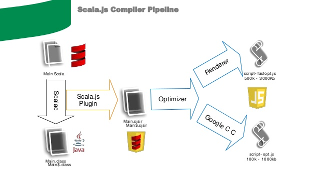

Scala.js & React
Julemøte i javaBin Trondheim 2015
Marius B.Kotsbak / @mkotsbak / github.com/mkotsbak
Konsulent i
i Trondheim
Scala
Scala er et programmeringsspråk med full støtte for både objektorintert og funksjonell programmering med et veldig sterk statisk typesystem og typeinterferens. Scala-programmer er svært korte (lite boilerplate) sammenliknet med andre programmeringsspråk. Mange av Scalas designvalg ble inspirert av kritikk av svakhetene i Java.
Kildekoden blir kompilert til Java-bytecode, og kjøres på en JVM. Java-bibliotekene kan brukes direkte i Scala kode og motsatt.
Designet av Martin Odersky og utviklet Programming Methods Laboratory på École Polytechnique Fédérale de Lausanne. Komersiell support og utvikling av Typesafe.
Eksempel: Java
public class Person
{
private String firstName;
private String lastName;
String getFirstName() {return firstName;}
void setFirstName(String firstName) {this.firstName = firstName;}
String getLastName() {return lastName;}
void setLastName(String lastName) {this.lastName = lastName;}
int hashCode() = { .... }
boolean equals(Object o) { .... }
}
(uten Lombok e.l. hack)
Eksempel: Scala
case class Person(firstName:String, lastName:String)
Myter om scala
- Scala blir overflødig med Java 8
- Fakta: Den Verste boilerplate forsvinner, men det er mye mer:
- typeinterferens, makroer, pattern matching, Option i API, immutabilitet, case classes, overlasting av operatorer, navngitte parametre, defaultverdier, implicits etc.
- Scala er vanskelig å lære
- Fakta: Det er et stort språk med mye syntax, men man kan ta i bruk så mye man ønsker.
- Største forskjellen er funksjonell programmering og oppfordring til immutabilitet, som kommer i alle språk nå (Java 8 lambdas, Immutable.js)
Scala.Js
- Kompilering av Scala-kildekode for å kjøre som Javascript ("webbens assemblykode"), som Typescript, Coffescript etc.
- Startet som et forskningsprosjekt på EPFL. Nå et stort miljø rundt både kompilator og tilhørende bibiliotek
- Ble erklært stabilt for bruk (og stabile API-er) våren 2015
- Det meste av Scalas funksjoner er støttet (inkl. makroer, Futures, typeklasser, async{await}). Mangler reflection og tråder/sleep (som i JS).
- Bibliotek kan krysskompileres til både Scala.Js og JVM og publisere begge til Maven-repositories.
Hvorfor Scala.Js?
- Typesikker kode. Ikke runtime-feil eller bugs ved typos eller blanding av typer ("kompilerer det, så fungerer det")
- Fullføring og dokumentasjon i IDE, ikke i ekstern dokumentasjon:

Hvorfor Scala.Js?
- Moderne og avansert språk
- Minimalt med boilerplate pga. bl.a. språkfunksjoner og makroer
- Gjenbruk mange av bibliotekene fra vanlig Scala i stedet for tilsvarende Javascript-bibliotek
- Samme byggesystem (sbt) for både frontend og backend. Webjars sørger for js-deps automatisk
(trenger ikke Gulp, Grunt, Bower, NPM eller hva det mest populære bygge/pakkesystem for JS heter i dag):
jsDependencies += "org.webjars" % "jasmine" % "1.3.1" / "jasmine-html.js" dependsOn "jasmine.js"
Wrappere sine avhengigheter hentes automatisk via maven
- Deling av kode mellom klient og sørver (algoritmer, klasser serialisert over JSON, RPC)
- Bruk samme testrammeverk på klient- og sørverkode. Kjør samme tester under JVM og Node.js.
- Det er GØY å drive med webprogrammering med Scala.Js!:
- Sitat fra utvikler av Querki: "Switching to Scala.js improved productivity something like tenfold, both due to the strongly-typed environment and the clean end-to-end integration with the back end, thanks to deep Autowire-based APIs. It's now far easier to add new UI pages, and new APIs to drive them"
Men ES6 eller Typescript løser da alle problemer med Javascript?
ES6 har mange nyttige tillegg, men Scala er fremdeles mer avansert språk, og det mangler typer.
Typescript er OK, men typer er ikke obligatorisk, og kun Node.Js (med callback pyramid of doom) er støttet på sørver.
Pipeline
Java-bibliotek støttes ikke. Inkompatibilitet med lisenser gjør at man ikke kan konvertere Java-kode til Scala og krysskompilere
Kan løses med clean room-kloner, e.g. JodaTime -> SodaTime
Interop med Javascript
import scala.scalajs.js.Dynamic.{global => g}
@JSExport
object HelloWorld {
@JSExport
def main(): Unit = {
println("Hello world!")
val seekBarAndroid: Dynamic =
g.require("react-native-seekbar-android")
}
}
Datatyper
- Vanlige som Boolean, Int, Float er støttet
- var x = 5; val y = "Constant"
- js.Object
- js.Function (konverteres automatisk til/fra Scala-funksjoner)
- Javascript-objekter: js.Dynamic.literal(foo = 42, bar = "foobar") eller js.Dynamic.literal("foo" -> 42, "bar" -> "foobar")
- js.UndefOr[T] og pseudo-union: Int | Boolean
Definere ES6-klasser
import scala.scalajs.js
import js.annotation._
@ScalaJSDefined
class Foo extends js.Object {
val x: Int = 4
def bar(x: Int): Int = x + 1
}
Kan brukes mot API-er som krever JS-klasser, f.eks. React
JS-wrappere
@js.native
trait Window extends js.Object {
val document: HTMLDocument = js.native
var location: String = js.native
def innerWidth: Int = js.native
def innerHeight: Int = js.native
def alert(message: String): Unit = js.native
def open(url: String, target: String,
features: String = ""): Window = js.native
def close(): Unit = js.native
}
@JSName("THREE.Scene")
@js.native
class Scene extends js.Object
Bibliotek
Mer og mer blir tilgjengelig krysskompilert for Scala.Js, f.eks: Monocle, Shapeless, Akka, ScalaTest, ScalaCheck
Enkelt å krysskompilere om alle dependencies finnes for Scala.Js, og koden ikke bruker ustøttede operasjoner som tråder eller reflection
Plugin for Play bygger automatisk JS ved endring ved relasting av siden
Vanlige stacks i bruk
- HTML-kode i egen fil. Kun litt DOM-manipulering, evt. via jQuery-wrapper
- Scalatags evt. med f.eks. Scala.Rx for funksjonelt reaktiv programmering:
body( div( h1(id:="title", "This is a title"), p("This is a big paragraph of text") ) ) - JS-wrappere for f.eks. Angular og FB React
- Native webrammeverk for Scala.js som Widok/MetaRx, ScalaJS Binding
React og React Native
Man har er veldig populær wrapper for React: scalajs-react
Pakker inn React på en typesikker måte for props og state
React Native
Relativt nytt, spesielt for Android. Finnes en umoden wrapper: Sri (Scala React interface)
Denne er en mer Javascript-basert tilnærming ved bruk av støtten for ES6-klasser i nyeste React-versjonene. Foreløpig noen deler som er mindre sterkt typet. Støtter både iOS, Android, Web og Desktop (via Electron)


Demo / spørsmål?
Helt fersk ny webside for prosjektet: www.scala-js.orgMarius B.Kotsbak / @mkotsbak / github.com/mkotsbak